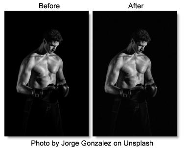

Grain
Description
Grain simulates film grain with control of size, intensity and softness. In addition, a Film Response parameter controls where you will see grain in the image. Popular film stock presets are provided as a starting point to adding grain.
Category
Film Lab.
Controls
Presets
To select a preset, pick one from the Presets window.
Monochrome
When checked, the grain is monochrome. In this mode, only the Red Size, Red Amount and Red Softness sliders are active. Since the grain is monochrome, only one slider is needed.
Size
The Size parameter controls the size of the grain. The larger the Size setting, the larger the grain will be.
Amount
The Amount parameters set the red, green and blue intensities of the grain. Film stocks generally have varying amounts of red, green and blue intensities with the blue intensity generally higher than the rest. If you turn the red, green and blue amount sliders to a value of 0, the grain will disappear.
Red Amount
Controls the intensity of the red grain.
Green Amount
Controls the intensity of the green grain.
Blue Amount
Controls the intensity of the blue grain.
Softness
The Softness parameter controls the softness of the grain. Normally, only minor softness adjustments are necessary, usually between a value of 0-1.
Film Response
The Film Response parameter allows the adjustment of where you will see grain in the image. In most cases, film grain is apparent over the entire image except the brightest whites with the black areas being the most affected.
Position
The Position slider defines the portions of the image where grain will be added. A low Position value places grain in the darkest image values, while a high Position value places grain in the brightest areas.
Range
Increases or decreases the area where grain is added to the image based on the value of the Position slider. A low Range value indicates a narrow range of values, while a high Range value indicates a large range of values.
Minimum
Sets the minimum level of grain that is always added to the image.
Note: A Position value of 0 and a Range of 80 is typical of standard film, with grain applied to the entire range except the brightest whites with black being the most affected.